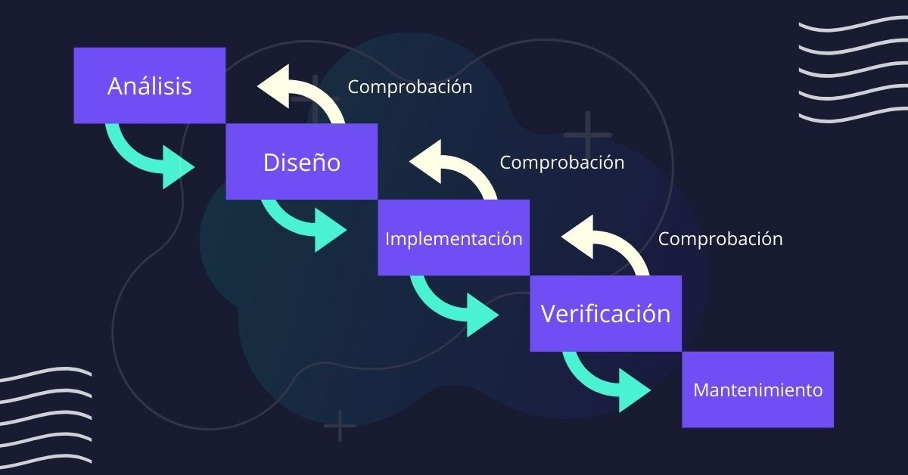

<div [@Contenido]  class="contenedor-tema">
    <section class="desarrollo">
        <div class="contenedor-title">
            <h2>Metodología Cascada</h2>
        </div>
        <div class="contenedor-desarrollo">
            <div class="contenedor-subtitle">
                <h3>El modelo en cascada: desarrollo secuencial de software. </h3>
                <br/>
                <p style="text-align: left;"></p>
                <h3>¿Qué es el modelo cascada?</h3>
                <br/>
                <p>El desarrollo en cascada (en inglés, waterfall model) es un procedimiento lineal que se caracteriza
                    por dividir los procesos de desarrollo en sucesivas fases de proyecto. Al contrario que en los
                    modelos iterativos, cada una de estas fases se ejecuta tan solo una vez. Los resultados de cada una
                    de las fases sirven como hipótesis de partida para la siguiente. El waterfall model se utiliza,
                    especialmente, en el desarrollo de software.</p>
                    <br/>
                    <div class="ytb"><youtube-player class ="video" videoId="gv09Z59mdAk" suggestedQuality="highres" [height]="400" [width]="600">
                    </youtube-player></div>
                <br/>
                <p><b>Fases de Modelo Cascada:</b></p>
                <br/>
                <p>El modelo de desarrollo en cascada sigue una serie de etapas de forma sucesiva, la etapa siguiente
                    empieza cuando termina la etapa anterior.</p>  <br>  
                <ul style="text-align: left;">
                    <li><b>Diseño&nbsp;</b>La fase de diseño sirve para formular una solución específica en base a las
                        exigencias, tareas y estrategias definidas en la fase anterior. En esta fase, los
                        desarrolladores de software se encargan de diseñar la arquitectura de software, así como un plan
                        de diseño detallado del mismo, centrándose en componentes concretos, como interfaces, entornos
                        de trabajo o bibliotecas. La fase de diseño da como resultado un borrador preliminar con el plan
                        de diseño del software, así como planes de prueba para los diferentes componentes.</li>
                </ul>
                <br>
                <div>
                    <ul style="text-align: left;">
                        <li><b>Implementación&nbsp;</b>Despues de la etapa de diseño en esta fase se programan los
                            requisitos especificados haciendo uso de las estructuras de datos previamente diseñadas.
                            Mediante el uso de la programación siguiendo paso por paso los algoritmos para solucionar el
                            problema</li>
                    </ul>
                </div>
                <br>
                <div>
                    <ul style="text-align: left;">
                        <li><b>Verificación&nbsp;</b>Al terminar la fase de implementación se verifica que todos los
                            componentes del sistema funcionen correctamente y cumplen con los requisitos establecidos.
                            El objetivo de las pruebas es el de obtener información de la calidad del software, y sirven
                            para: encontrar defectos o bugs, aumentar la calidad del software, refinar el código
                            previamente escrito sin miedo a romperlo o introducir nuevos bugs.</li>
                    </ul>
                </div>
                <br>
                <div>
                    <ul style="text-align: left;">
                        <li><b>Mantenimiento&nbsp;</b>Una vez se han desarrollado todas las funcionalidades del software
                            y se ha comprobado que funcionan correctamente, se inicia la fase de instalación y
                            mantenimiento. Se instala la aplicación en el sistema y se comprueba que funcione
                            correctamente en el entorno en que se va a utilizar.</li>
                    </ul>
                </div>
                <br/><div class="contenedor-imagenes"></div><br /><br/>
                <div>
                    <div><b>Roles.</b></div>
                    <div>
                        <ul style="text-align: left;">
                            <li>Cliente: Persona o empresa a quien se le va a construir el software.</li>
                            <li>Jefe del Proyecto: Tiene por función presentar informes sobre las litigaciones de
                                riesgos, hacer cumplir los plazos y lleva el control de los costos. También organiza el
                                equipo, realiza planificación y estima el tiempo de las actividades. En conclusión,
                                resuelve problemas.</li>
                            <li>Analista en Requerimientos: Se encarga del revelamiento de los requerimientos esenciales
                                para el desarrollo del Software, la documentación de los requerimientos para así el
                                resto del equipo lo pueda consultar en cualquier momento. Debe ser una persona con
                                capacidad de abstracción y análisis.</li>
                            <li>Equipo de desarrolladores: Encargado de la concepción y el diseño, escribe el código,
                                prueba lo que construye y se encarga de hacer el mantenimiento del código.</li>
                            <li>Equipo de Pruebas: Diseña y ejecuta las pruebas, para ello requiere conocer el producto
                                a probar, estudiar funcionalidad del producto y desarrollar las pruebas que revelen
                                incidentes críticos. Reporta los incidentes y provee información sobre la calidad del
                                sistema.</li>
                        </ul>
                    </div>
                </div>
                <p></p>
            </div>


        </div>

    </section>
</div>